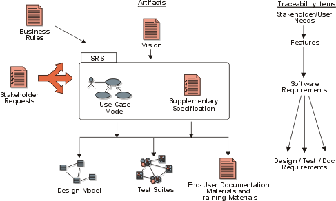

Concepts:
Types of Requirements
More Information: Concepts: Requirements
Concepts: Requirements Management
Concepts: Traceability
White Paper: Applying Requirements
Management with Use Cases
Traditionally, requirements are looked upon as statements of text fitting
into one of the categories mentioned in Concepts:
Requirements. Each requirement states "a condition or capability to
which the system must conform".
To perform effective requirements management, we have
learned that it helps to extend what we maintain as requirements beyond only the
detailed "software requirements". We introduce the notion of requirements
types to help separate the different levels of abstraction and purposes
of our requirements.

We may want to keep track of ambiguous "wishes", as well as formal requests,
from our stakeholders to make sure we
know how they are taken care of. The Vision
document helps us keep track of key "user needs" and
"features" of the system. The use-case
model is an effective way of expressing detailed functional "software
requirements", therefore use cases
may need to be tracked and maintained as requirements, as well as perhaps
individual statements within the use case properties which state
"conditions or capabilities to which the system must conform". Supplementary
Specifications may contain other "software requirements", such as
design constraints or legal or regulatory requirements on our system. For a
complete definition of the software requirements, use
cases and Supplementary Specifications
may be packaged together to define a Software
Requirements Specification (SRS) for a particular
"feature" or other subsystem grouping.
The larger and more intricate the system developed, the more expressions, or
types of requirements appear and the greater the volume of requirements.
"Business rules" and "vision" statements for a project trace
to "user needs", "features" or other "product
requirements". Use cases or other
forms of modeling and other Supplementary
Specifications drive design requirements, which may be further decomposed to
functional and non-functional "software requirements" represented in
analysis & design models and diagrams.
Copyright
© 1987 - 2001 Rational Software Corporation
|  Disciplines >
Disciplines >
 Requirements >
Requirements >
 Concepts >
Concepts >